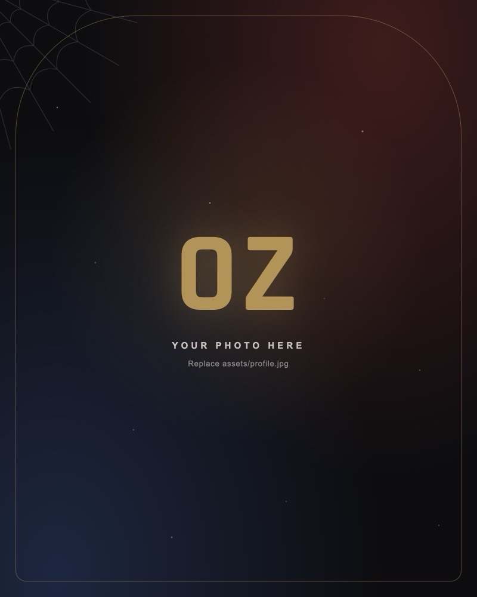

Semantic HTML
Landmarks, forms, metadata
Web Programming Student · Gachon University
I build responsive, accessible websites with semantic HTML, modern CSS and plain JavaScript. This portfolio collects the projects and reports I have shipped during the Web Programming course.

01 / About
Curious by nature. Building a strong front-end foundation one week at a time, with clean code and real projects.
I'm Olimjonov Ziyodulloh, a Web Programming student at Gachon University in South Korea.
My focus is front-end development: semantic markup, responsive layouts, the DOM, and calling REST APIs from the browser. I care about pages that work for everyone, including keyboard and screen-reader users.
I also practise performance optimization and use Lighthouse to measure the result, because a fast page is part of a good user experience.
02 / Toolkit
A growing toolkit from the course: from document structure to client-side APIs, accessibility and deployment.
Landmarks, forms, metadata
Grid, flexbox, variables
DOM, events, validation
Fetch, JSON, error states
WCAG, ARIA, focus order
Lighthouse, image weight
Branches, commits, merges
Static hosting, custom 404
03 / Selected work
Work from the course archive. Each project is live on GitHub Pages and the source is public.
Search the Open Library catalogue by title or author. Handles loading, empty and error states, with lazy-loaded covers.
Open the app ↗A before-and-after audit that fixed landmarks, heading order, contrast, focus styles and form labels.
Read the report ↗Measured a page with Lighthouse, then cut image weight, deferred scripts and removed render-blocking resources.
Read the report ↗Every weekly exercise, report and project from the course, collected on one static site.
Browse the archive ↗04 / Growth
The goal is not to know everything. It is to keep learning, build with purpose, and improve with every project.
Current direction
Strengthening the front-end fundamentals while practising the workflow professional teams use: version control, code review and automated deployment.
05 / Get in touch
I'm always interested in learning, collaborating and connecting with people who build great things on the web.